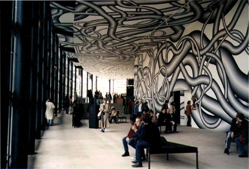

By Poyin Auyoung
|
What are the possibilities of producing a critical international art exhibition at the
end of the 20th-century? This is a pressing question when the established biennales like
the Venice Biennale and the Documenta are reaching their seniorities while a multitude of
younger large-scale biennales are springing up in Berlin, Luxemburg, Johannesburg,
Seoul, and other places. After visiting the three mega-art events this summer, I
experienced a bit of post-party distress, interspersed with thoughts on unresolved issues
about these blockbuster exhibitions -- the politics of representation, the festivalization of
art, the partnerships of culture and industry, and the globalization of everyday life --
scenarios calling for suspicion, not celebration. What do these international art events
have to offer other than contributing to an expanding culture industry? And to what extent
do they foster meaningful cross-cultural dialogue and critique? Andreas Huyssen’s
comment on monumentality is insightful. Huyssen suggested that despite the common
assumption that we live in a global, transnational culture, there are still cultural
boundaries, socio-economic disparities, language barriers, modes of domination and
control all over the globe, as well as in cyberspace.
THE 47TH VENICE BIENNALE For both sites, Celant uses an “open system” which is designed to extend beyond national boundaries by incorporating artists from different countries and different generations, to whom Celant refers as “transnational nomads.” Representing artists of diverse nationalities and generations under one roof may be unusual for the Venice Biennale, but it is hardly an innovative curatorial strategy. The so-called openness falls short of being adventurous and experimental but simply reveals a rather unfocused and predictable curatorial position. In comparison, the Nordic pavilion achieved outstanding results by including artists from outside the Nordic region for its exhibition “Naturally Artificial.” The contributions by Mark Dion, Henrik Hakansson, Mariko Mori, Sven Pahlsson and Marianna Uutinen conveyed a sense of diverse and yet shared sensibilities about the paradoxical relationships between nature and culture, and about the interpenetration of the natural and the artificial. We had been told that Celant had only four months to organize this Biennale, which makes the lack of curatorial direction more understandable. But the real issue at stake was the political battles and personal interests of the city government, the state, and the businesses who could not agree until the last minute whether to claim a piece of the blockbuster pie this year or wait for the millenium bash. Political-economic interests overrode aesthetic considerations. The Biennale is basically an instrument for achieving the various mundane objectives of the multiple players involved, giving low priority to considerations of exhibition quality and integrity. These hidden agendas are probably prevalent among other large-scale exhibitions, which have considerable leverage to draw public and private supporters/sponsors because of their ability to attract international and huge audiences, tourist dollars and high profile media coverage. Operating under the loose framework of “Future Present Past,” Celant conceived the two shows based on three periods of artistic movements: from the '60s to the '70s as defined by Pop, Minimalism, Conceptualism, and Arte Povera, as represented by Clae Oldenburg with Coosje van Bruggen, Sol LeWitt, Mario Merz, John Baldessari, Jan Dibbets and others; the '80s era of Neoexpressionist paintings and Post-Pop as represented by Francesco Clemente, Anselm Kiefer and Robert Longo, among others; and the '90s concerns with globalism and multiculturalism as in the work of Cai Guo Qiang and Ilya and Emilia Kabakov. The established figures had been invited to contribute a recent work to be shown alongside the work of younger artists. However, it is difficult to get a coherent sense of connections or specific relationships from most of his placements as one wanders through those sprawling rooms in the Italian Pavilion, showing the work of Ed Ruscha, Annette Messager, Rebecca Horn, Richard Tuttle, Jim Dine, Luciano Fabro, Brice Marden, Gino De Dominicis, and others. The elongated exhibition space in the Corderie is left open without any dividing walls. One encounters a very theatrical beginning with Jeff Koon’s sculpture and a monumental ending with Julian Schnabel’s painting. Many of the works in-between delivered spectacular presentation, as in Robert Longo’s sculpture and Mariko Mori’s color photo-mural. While the exhibition is physically open, it is not necessarily conceptually adventurous as one is constantly being reminded of the “masters” and their legacies in younger generations, whose works are often dimmed or decontextualized in the juxtapositions. The manner in which different nations are represented appears to be highly political and problematic. The Giardini site, which houses the national pavilions, was promoted as the core of the Biennale, furnishing a map clearly indicating the location of each national pavilion. Primarily occupied by European and North American countries, the main site includes only two Asian countries (Japan and Korea), and three South American countries (Brazil, Uruguay, Venezuela). The pavilions of other countries such as Armenia, Croatia and Argentina are located off the main site, utilizing the spaces of local churches, palaces and museums scattered throughout the city of Venice. No maps are provided to guide the visitor in locating the less prominently represented countries. Wandering around the meandering streets and quaint piazzas of Venice can be a very enjoyable and even educational experience, but this does not relieve the frustrations of being lost, of being systematically discouraged from seeing the works of under-represented regions. The lesson learned from the Venice experience is that site and placement do matter -- even in our time of supposedly globalized, decentralized, and virtual spaces -- unfortunately, every site is not equal. Selection and exclusion always accompany decision-making, whether it concerns physical space or cyberspace. And often, uneven arrangements or token representations are still based on the political and economic status of nation-states. After all, the “transnational nomads” still have to wander within predetermined structures and institutional contraints. The idea that we can alter this obsolete paradigm founded on the hierarchy of nation-states by simply rearranging the art being shown rather than challenging the underlying political and economic forces at work is naive and deceptive. Art, after all, is not separate from politics.
Documenta X  Politics is a buzzword in this year’s Documenta. What does Documenta X have to offer, in the light of its artistic director Catherine David’s emphatic claims to orchestrate this year’s project with a critical and political purpose? As she iterated in the Documenta Short Guide, “it may seem paradoxical or deliberately outrageous to envision a critical confrontation with the present in the framework of an institution that over the past twenty years has become a Mecca for tourism and cultural consumption. Yet the pressing issues of today make it equally presumptuous to abandon all ethical and political demands.” The Documenta X exhibition is accompanied by two other components: the “100 Days -- 100 Guests” lecture program which is also distributed through the Internet; and the Book, an 840-page collection of text and image, criticism and essays by artists, critics, art historians, philosophers, social theorists, and writers from various disciplines. In addition, a variety of theatre and film projects were commissioned specifically for Documenta X. Armed with a generous budget of over US$12 million and given a period of four years to organize the project, David mobilized an exhaustive list of cross-disciplinary participants and events to materialize a large-scale, multi-media event of contemporary culture. Despite the diversity of medium and artistic production, David manages to assert her voice and her control throughout the project, which is particularly pronounced in the exhibition. This turns out to be both a strength and a weakness of the project. With a very well-articulated theoretical proposition and a narrowly focused curatorial position, David steers the viewer along the “parcours”, or path, from the old train station to the last stop, the Orangerie, seemingly with a single purpose in mind -- to assert her idea of what critical art and political art should be. In an interview with Robert Storr, David differentiates between rhetorical, instrumentalized political art and the critical art that she priviledges. “Critical art has a wider compass: it has to do with what I would call the radical critique of culture’s anthropological foundations -- meaning, paying attention to articulations, to sites of relevance, and to shifts from one area of competence to another.” In the exhibition, the work of Marcel Broodthaers, Gordon Matta-Clark, Jeff Wall, and Stan Douglas are exemplaries in their radical critiques of the categories of perception and knowledge functioning within art, language, and culture. Broodthaers articulated the conceptual and institutional framing of the fine arts; Matta-Clark subverted the ideological and operational principles of architectural practice; Wall redefines the boundaries of the fine arts and the media arts; and Douglas analyses the language of the media arts and technology. It is promising to see curators taking a position, making known the underlying purpose, and working through one’s presuppositions and criteria of selection. Most large-scale contemporary art exhibitions tend to present a survey of current artistic production, sampling works from a wide spectrum of practices, seemingly without a bias or preference other than affirming the current artistic trends. By now, we realize that it is presumptuous, if not naive, for curators to claim objectivity and universal representation. Social and cultural production is inevitably framed by our own subjectivities and personal agendas. However, David’s singular definition of critical art overlooks the heterogeneous strategies and the unresolved conditions of art production, thereby limiting the possibilities for critical practices. There are only a handful of works in the exhibition which have a more direct confrontation with social and political issues, as in the work of Hans Haacke, Nancy Spero, and Johan Grimonprez. David probably did not select these works for their explicit political content. I agree that it is crucial to acknowledge the significance of critical interventions which question the underlying conditions of perception and knowledge. However, by excluding the more confrontational interventions, David commits the same flaw that she attempts to challenge, namely, the complacency of accepting dominant categories, and in this case, her own hierarchization of critical art. One alternative is using multiple subjectivities on the curatorial level, allowing room for other voices in exploring the possibilities for critical art production. One of the inspiring features of Documenta X is the prominence given to “historical works” (from the '40s to '70s) and the reconstructed context within which some of these well-known works are re-presented. The blending of historical and recent works is encouraging, especially when the juxtapositions reconstruct meanings and redefine relationships among established categories of work. For instance, one of the central threads linking the works of Documenta X is urbanism and architecture. Walker Evans’ black and white documentary photographs of New York subway passengers are placed among the urban interventionist work of Matta-Clark, Haacke, and Alison and Peter Smithson. Correspondingly, the series of small-scale photographs of urban streets taken by Helen Levitt in the '40s are so prominently displayed that they encourage the viewer to reassess the critical potential of these works. These juxtapositions help to bring out the interventionist aspect of these historical works and underscore how they deviated from the humanist tradition of documentary photography in the '30s and '40s. The curatorial strategy of blending historical and contemporary works is promising, as it stands apart from previous Documentas as well as many large-scale contemporary art exhibitions which primarily presented a survey of recent works. However, David’s selection of recent works on urbanism and architecture is not as strong in comparison to the historical ones. Rem Koolhaas' superimposition of image and text of the Pearl River Delta development takes up 36 pages in the Book and its installation as “wall paper" occupies vast wall spaces of two galleries. The computer-generated photo-montage, the “sound-byte” text, and its floor-to-ceiling, colorful dense surface may serve to suggest the intensity and extensiveness of urban and technological developments in China, but barely engage the viewer on more critical issues such as the social and cultural impact of rapid modernization and industrialization, and the experience of language and cultural barriers. Yana Milev’s elaborate equipment employed to delineate the boundaries of public and private space seems simplistic and rigid, failing to address the socio-psychological and institutional conditions of territoriality. After seeing a few more of these uninspiring contemporary works, one tends to gather the dismal impression that the golden era of critical, urban interventionist art belong to the '60s and 70's generation of conceptual art practices. After having spent several days in Kassel, I still could not get a sense of the history, social and urban processes that are specific to Kassel. Or may be there are none? That appears to be the impression that Documenta X renders the city, which comes across as just another generic, postindustrial European city going through the boom and bust cycles at the mercy of the global economy. This is a rather grand assumption, presupposing that global forces mask everyday life, local histories and specific socio-economic and political processes. Kassel simply functions as a backdrop for Documenta X, with the exception of a few works. Dan Graham’s “Video for Two Showcase Windows,” installed on the Treppenstrasse pedestrian shopping mall, reverberates with the window-shopping activities and the spectator/consumer’s experience of desiring the displayed commodities. Stephen Craig’s almost life-size model pavilion with interior video, which also refers to the Treppenstrasse, recalls the historical source and the residents’ personal experiences of the mall’s modern functionalist architecture. Aglaia Konrad’s photo-glass installation reminds the viewer of the rift between the inside and outside, between the aestheticized images of cities and the immediate perceptual and spatial experience of Kassel. Another historically and spatially specific work is Christian Phillip Muller’s installation in the Museum Fridericianum. It makes direct references to Joseph Beuy’s “7,000 Oaks” and Walter de Maria’s “Vertical Earth,” both installed in the Friedrichsplatz in front of the Museum. Using photo text, and the specific site, Muller provides information about past Documentas and demonstrates how these two canonical works have been “altered” or put off-balance due to the development of a parking garage underneath the plaza. Despite David’s tight conceptual and spatial framework in delineating the Documenta X boundary, one could get a sense of the larger institutional and discursive frameworks within which Documenta X operates. Local businesses are eager to exploit this crowd-attraction event; city resources are expended to facilitate this international contemporary art showpiece for the city. The “partnerships” of art and industry are apparent everywhere as one gets a drink at Bistro Dokumentation, selects from the Documenta Menu listing appetizing dining selections supplemented with bits and pieces of Documenta’s history, or stares at the shoe shop window presenting the red and black shoes to match the Documenta X logo on display. I am still wondering to what extent has Documenta X engaged visitors in a critical gaze on its own framing and history.
SCULPTURE PROJECT IN MUNSTER 1997 Defining public space has become extremely problematic as our social life is increasingly infiltrated by the private industry, the media, and cyberspace. In consideration of the current crisis of public space, I think the significant works of the Sculpture Project '97 are those which are reflexive of its own language structures and limitations, and are critical of the institutional and discursive frameworks within which public sculpture is realized. These are works which articulate and problematize the aesthetic, social and communication limitations of art in the public sphere. Unfortunately, only a small number of the works in the '97 project adequately address these concerns. Exemplary ones are Hans Haacke’s Standorf “Merry-go-round” and Janet Cardiff’s “Walk Munster and Telescope/Video.” Constructed as a “double” of the adjacent 1909 war memorial, Haacke’s carousel is concealed by an imposing cylindrical wooden structure. Through the wooden slits, one can detect sparks of glimmering light and faint tunes of the German national anthem, giving clues to the hidden, rotating, and empty merry-go-round. This provocative, multi-faceted installation refuses easy access, resisting the facile consumption of leisure. It brings up the double functions of monuments as national symbols of power and as objects of leisure, suggesting the limitations of public sculpture in fostering open dialogue. Janet Cardiff’s audio tour mixes Munster’s environmental noises with fabricated sounds, and blends fictional narrative with actual events and sites; all of which reflects the multiple sources and languages that inform our construction of histories and memories of a place. The visual component involves the installation of a telescope which had been reconstructed with a “video lens”, projecting a fictional view of the environment outside the museum. The work articulates the tension, and the discrepancy between representation and reality, between the framing and the framed. The visual device is located inside a museum and the audio tour is similar to the didactic audio tours that visitors use in museums. Both works remind us of how our perception and reception are constructed within the site, structure, and language of institutions. The majority of works in this year’s project refers to leisure and the amusement park. While many of them are surprisingly simplistic, there are some which offer a more ambiguous, ironic reading of leisure. Examples are Tobias Rehberger’s fictitious bar, Kim Adam’s inaccessible carousel that does not turn, and Elin Wikstrom/Anna Brag’s reconstructed bicyles that travel backwards. |
|
| After going through the “rummage sale” show in Venice, and the didactic and cerebral project in Kassel, the art-hunt in Munster seemed initially so refreshing and digestible. But on second thought, I realized the catch. Munster is a very charming, idyllic, and small city, a fertile ground for the leisure industry and resort development. If the sculpture project as a whole manages to encourage visitors to participate in rather than question the conditions of leisure, what is the critical potential of sculpture in public places at the end of the 20th-century? Is there still room for resisting the festivalization of art and challenging the ideological, structural, and operational principles of the leisure industry? Has site-specificity really had its time? This seems to be the case as far as how these exhibitions related to their cities. The Venice Biennale placed minimal significance on the numerous sites of exhibitions scattered throughout the city. Documenta X surveyed many cities across the globe to analyse the effects of globalization without paying enough attention to the specific situations in Kassel. And the Munster Sculpture Project '97, while being in tune with what the specific sites have to offer, had neither repositioned itself to interrogate the specific conditions of leisure in Munster, nor furthered the achievements of the '87 project. |
|